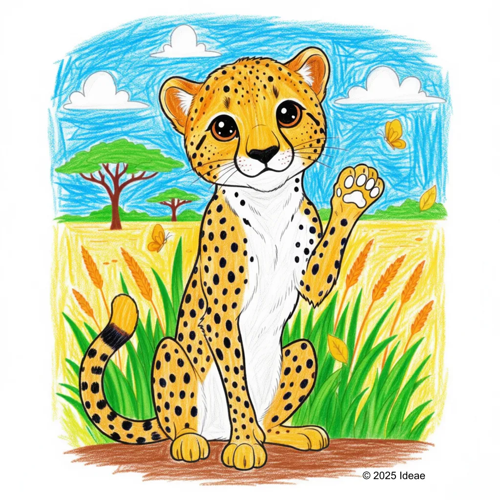

Cheetah
Acinonyx jubatus

Key Characteristics
- The Cheetah is the fastest land animal on Earth, capable of running faster than a speeding car!
- They have a small head, long, thin legs, and a very flexible spine, all built for speed.
- Cheetahs have unique black 'tear lines' running from their eyes to their mouth, which help reflect the sun's glare while hunting.
Peculiar Facts (Fun Facts!)
- A Cheetah can go from 0 to 60 mph (97 km/h) in about three seconds—faster than most sports cars!
- Unlike other large cats, Cheetahs cannot roar; they make a high-pitched sound called a 'chirp' or 'churr'.
- Their long, heavy tail acts like a rudder on a boat, helping them steer and maintain balance during high-speed turns.